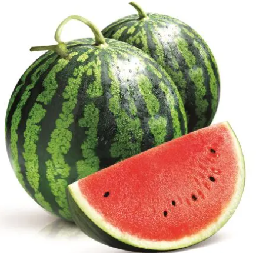
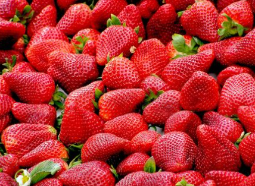

상품소개

수박(watermelon)
대개 수박이라 하면 수박이라는 식물의 열매를 지칭하며, 대개 사람 머리통보다 큰 열매가 덩굴에 맺히며 수분 함량이 높은 것이 특징이다. 과육의 대부분은 물로 구성되어 있다.(91% 수분, 6% 당 등) 기사. 수분 함량이 높아서 땀을 많이 흘린 여름에 섭취하기에 좋다. 소변 때문에 애먹을 가능성이 높다.
당분 함량은 수박 100g당 당분 6.2g이다. 단맛이 강한 데 반해 당분 함량은 적은 편인데, 이는 신맛을 내는 유기산 함량이 매우 낮아서 순수하게 단맛만이 강하게 느껴지기 때문이다..

딸기
학문적 관점에 따라 딸기를 과일, 과채류(채소) 등으로 분류한다. 대한민국 법적으로는 부가가치세법 시행규칙 제24조 2항에서는 과일 또는 농업통계조사 규칙 제2조에서는 과채류 등으로 분류한다. 나라에 따라 과일인지 채소인지 이견이 있다. 기본적으로 미국과 일본, 한국 등지에서는 채소로 본다. 미국에서 딸기를 채소로 지정한 것은 관세 문제가 얽혀 있다. 토마토[3]도 마찬가지였다.